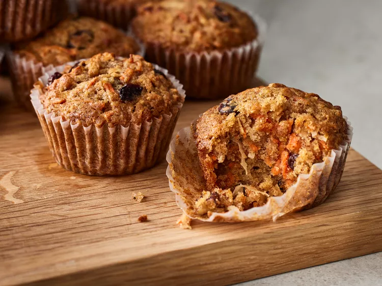

Easy Morning Glory Muffins

These morning glory muffins are easy to make and a glorious way to start any day. They combine the great taste and chewy texture of carrots with the wonderful flavors of apple, raisins, coconut, walnuts, and cinnamon.
Ingredients
- 2 cups all-purpose flour
- 1 ¼ cups white sugar
- 2 teaspoons baking soda
- 2 teaspoons ground cinnamon
- ¼ teaspoon salt
- 2 cups shredded carrots
apple - peeled, cored and shredded
- ½ cup raisins
- ½ cup chopped walnuts
- ½ cup unsweetened flaked coconut
- 3 large eggs
- 1 cup vegetable oil
- 2 teaspoons vanilla extract
Directions
- Preheat the oven to 350 degrees F (175 degrees C). Grease a 12-cup muffin tin or line cups with paper liners.
- Mix flour, sugar, baking soda, cinnamon, and salt together in a large bowl; stir in carrots, apple, raisins, walnuts, and coconut.
- Beat eggs, oil, and vanilla together in a separate bowl.
- Stir egg mixture into the carrot mixture until just moistened.
- Spoon batter into the prepared muffin cups, filling each 2/3 full.
- Bake in the preheated oven until tops spring back when lightly pressed, about 20 minutes. Cool in the tin for 5 minutes. Transfer to a wire rack to cool completely.
- Enjoy
Home